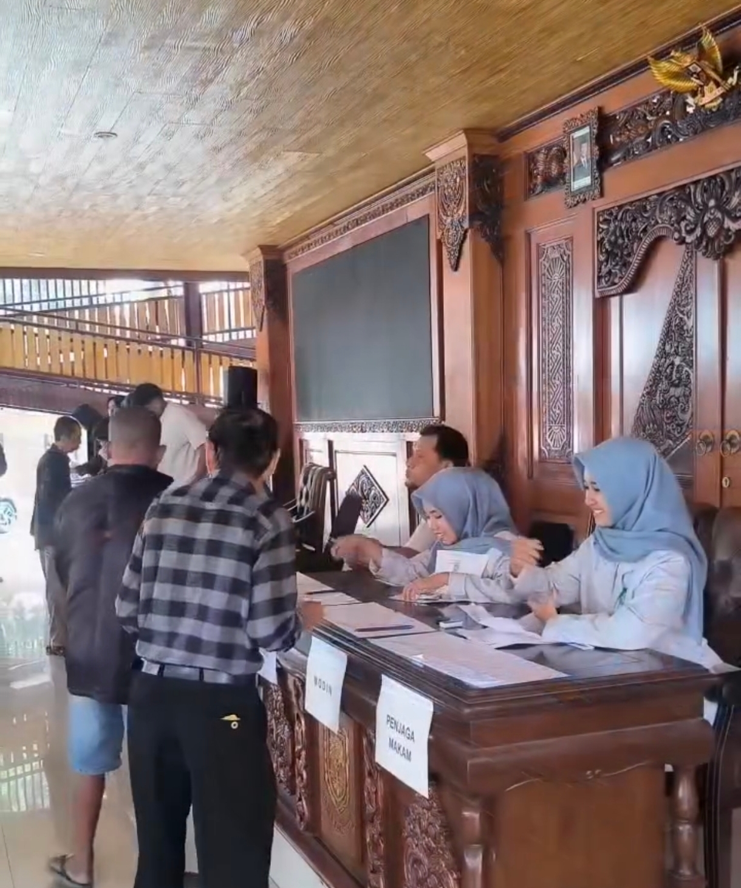
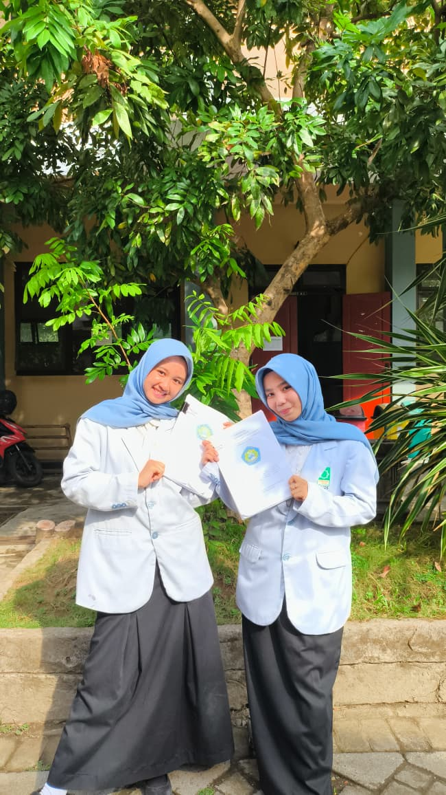
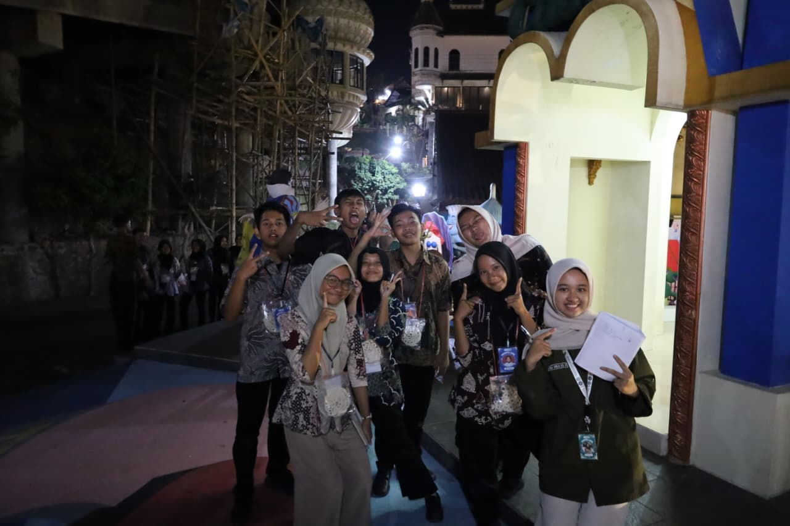
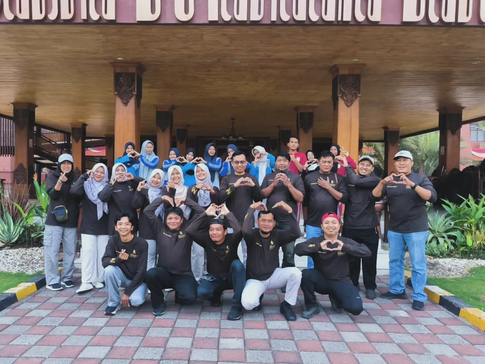
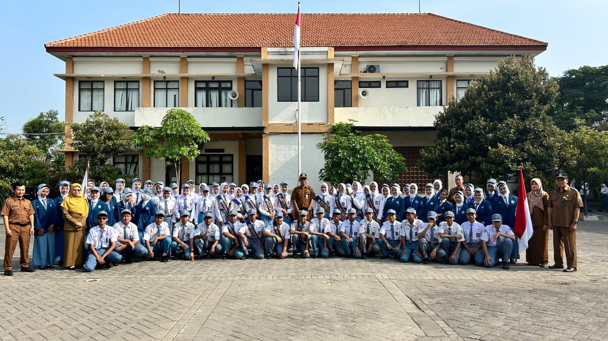

- Melakukan pendataan, verifikasi, dan rekapitulasi data peserta pelatihan kerja
- Membantu pelayanan dan registrasi peserta kegiatan
- Membantu proses administrasi dan pengelolaan dokumen
- Melakukan pengarsipan serta penyusunan berkas secara sistematis
- Melakukan dokumentasi serta menyiapkan perlengkapan kegiatan
Pelajar
Syifa Aprilia Ayu Wandika
Saya adalah pribadi yang teliti, disiplin, dan bertanggung jawab, dengan pengalaman di bidang administrasi dan pengelolaan dokumen.
Siswi SMK yang memiliki ketertarikan pada bidang administrasi dan perkantoran. Berpengalaman magang 6 bulan di Bagian Kesejahteraan Rakyat Setda Kota Mojokerto dalam pengelolaan dokumen, pengarsipan, pengolahan data, serta pelayanan administrasi. Pribadi yang teliti, disiplin, bertanggung jawab, dan mampu bekerja sama dalam tim.
Hubungi SayaPengalaman
- Membantu pelaksanaan tugas kesekretariatan organisasi
- Mendukung koordinasi dan administrasi kegiatan OSIS
- Mengoordinasikan kegiatan bidang hubungan masyarakat
- Menjalin komunikasi dan kerja sama dengan pihak terkait
- Berpartisipasi dalam pelaksanaan kegiatan sekolah
Contoh Hasil Kerja


Pengalaman PKL
Administrasi & pendataan peserta
Pengelolaan dokumen dan rekapitulasi data selama PKL.


Pengalaman PKL
Dokumentasi kegiatan
Dokumentasi kegiatan dan penyiapan perlengkapan selama PKL.

Kegiatan OSIS
Dokumentasi & administrasi kegiatan
Dokumentasi dan administrasi kegiatan OSIS.
Keahlian & Alat
Keahlian
- Administrasi perkantoran
- Pengarsipan dokumen
- Pengolahan data
- Komunikasi
- Public speaking
- Pelayanan
- Dokumentasi
- Manajemen waktu
- Koordinasi
- Kerja sama tim
Alat
- Microsoft Word
- Microsoft Excel
Pendidikan & Sertifikasi
Pendidikan
SMKN 2 Mojokerto
Sertifikasi
Belum memiliki sertifikasi profesional.
Kontak
- Email fafaaaadcth@gmail.com
- Lokasi Mojokerto, Jawa Timur, Indonesia
- LinkedIn linkedin.com/in/USERNAME